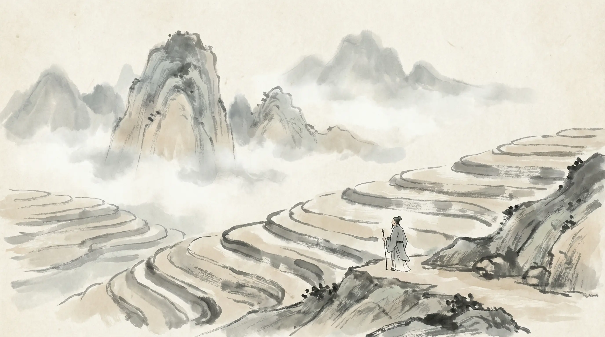
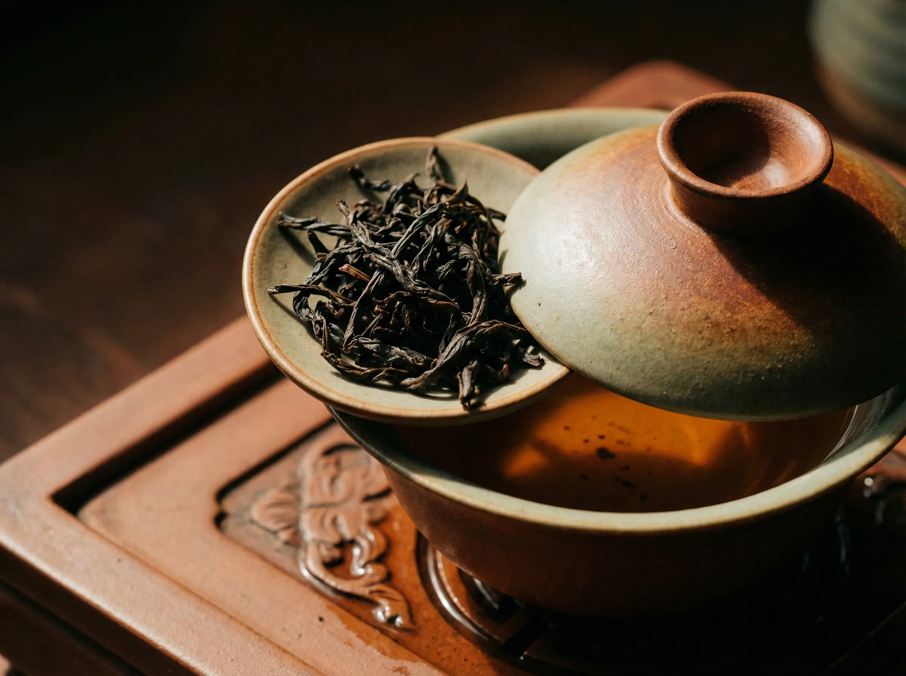
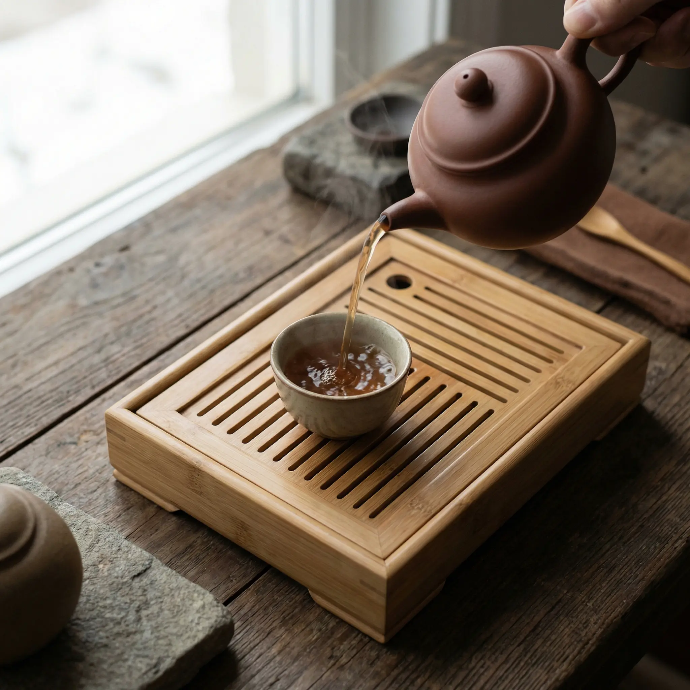

一盏茶，半山闲
茶者，南方之嘉木也— 陆羽 《茶经》
一千二百年前，陆羽写下这句话的时候，武夷山的茶树已经在云雾间生长了数百年。今天，山隐从同一片土地出发，延续这份与山林的约定。
品牌溯源
山隐始于武夷山桐木关，海拔一千一百米的茶园里，林家三代人守着同一片山场。祖父林守山在1960年代开始种茶，父亲林志远在80年代将手艺传承精炼，到了第三代林见山，决定让好茶走出深山。
"山隐"二字，取自祖父的一句话："好茶隐于山，不必争于市。"

甄选茶品

传统红茶 | 松烟香
桐木关原产地，百年老枞，松针烟熏工艺。汤色琥珀，入口桂圆甜香。
¥298 / 50g
头采白茶 | 毫香蜜韵
清明前三天采摘，全芽头制作。银毫密覆，汤色杏黄透亮，清甜回甘。
¥528 / 50g
岩茶之王 | 岩骨花香
三坑两涧核心产区，传统炭焙。七泡有余香，岩韵深沉，饮后齿颊留芳。
¥888 / 50g
传统工艺
清明前后
晨露未干时，手工采一芽一叶。每斤干茶需鲜叶四万余颗。
日光自然萎凋
竹匾摊晾，借阳光与微风，让叶片缓慢失水，香气初现。
手工慢揉
掌心与茶叶对话。轻揉使细胞破壁，茶汁渗出，成型塑韵。
炭火低温
荔枝炭慢焙八小时，火候全凭经验。去青气，定香型，锁住山场之味。
注：工艺以正山小种为例，不同茶类略有差异

茶是一场仪式，
关于慢下来，关于此刻
山隐之本
我们相信
让好茶回归本真
Made with MK Slide